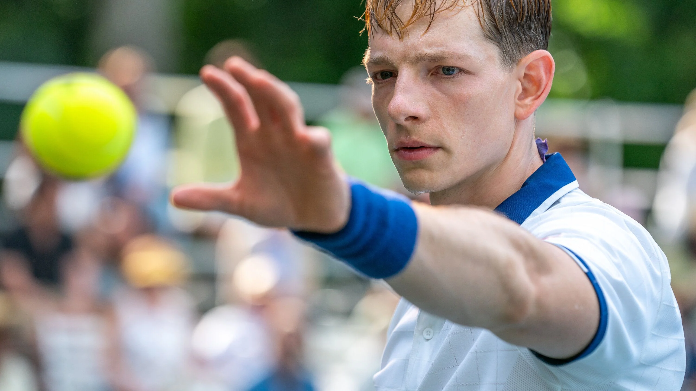
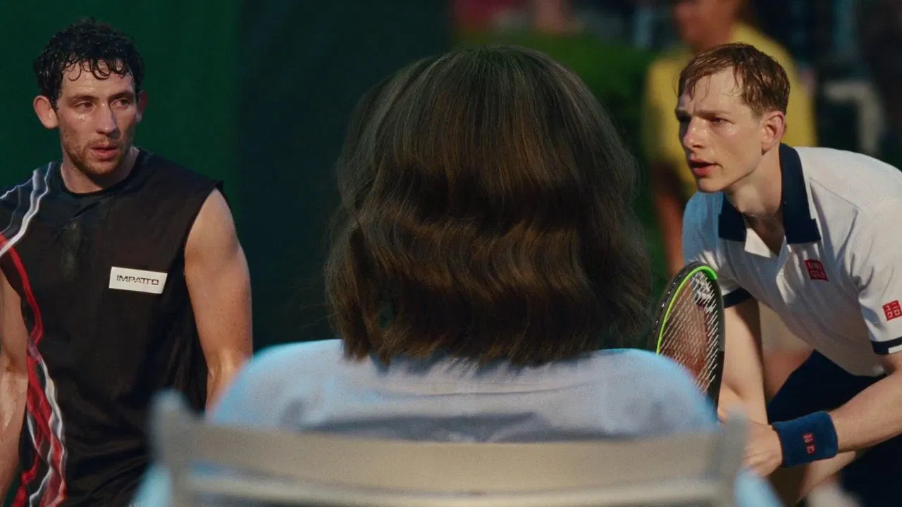

Date de sortie : 2024
Réalisateur : Luca Guadagnino
Genre : Drame, Romance, Sport
Acteurs principaux : Zendaya, Josh O’Connor, Mike Faist
Note globale : 4/5
Un film tendu, sensuel et intelligent, qui transforme le sport en champ de bataille émotionnel. Audacieux dans l’intention, parfois trop démonstratif dans la forme.
Un film qui surprend là où on ne l’attend pas
Alors là, je suis resté bouche bée. Je ne pensais pas qu’un film centré sur le tennis pouvait être aussi prenant. Challengers ne parle pas vraiment de sport, il l’utilise comme un prétexte pour explorer le désir, la rivalité et le pouvoir au sein d’un triangle toxique.
Le rythme est excellent, porté par des acteurs impressionnants et honnêtement, je ne m’attendais pas à ce niveau-là. Le film accroche vite et ne lâche quasiment jamais son spectateur.
Mise en scène : la tension avant le point
Luca Guadagnino filme le tennis comme une guerre psychologique. Les échanges ne sont pas là pour impressionner, mais pour faire monter la pression. Chaque regard, chaque silence, chaque geste compte autant qu’un coup gagnant.
La caméra est souvent intrusive, proche des corps, accentuant le malaise et la tension sexuelle. Le court devient un espace de domination, pas de performance sportive.
Musique et montage : efficace, parfois excessif
La musique est très bien choisie et colle parfaitement aux thèmes du film. Elle accompagne la montée de tension avec efficacité, même si elle est parfois trop utilisée. À force d’insister, le film souligne un peu trop ce qu’il réussissait déjà à faire ressentir naturellement.
Le montage nerveux participe à l’énergie globale, mais certains choix notamment les ralentis finissent par fatiguer. Il y en a trop. Beaucoup trop. À force, l’impact se dilue.
Sexualité et pouvoir : le vrai sujet du film
La sexualité est omniprésente, assumée, et surtout bien intégrée. Rien n’est gratuit. Elle sert le récit, les rapports de force et les blessures d’ego. Le film ose, et ça fonctionne.
Zendaya est au centre du jeu, mais ce sont surtout les dynamiques entre les trois personnages qui rendent le film aussi intéressant. Personne n’est vraiment innocent, personne n’est totalement honnête.
Un scénario solide, mais trop sage dans sa conclusion
Le scénario est bon, intelligent, mais jamais réellement audacieux. La fin, notamment, manque de courage. J’imaginais Patrick gagner et verbaliser clairement la double trahison sportive et intime infligée à Art. Ça aurait été brutal, dérangeant, mémorable.
À la place, le film choisit une conclusion plus “acceptable”. Ça fonctionne, mais ça ne marque pas autant que ça aurait pu.
Conclusion
Challengers est un film tendu, sensuel et surprenant, qui détourne intelligemment le film sportif pour parler de désir et de domination. Malgré quelques excès de style et une fin trop sage, il reste une proposition forte et marquante.
Clairement un film que j’aurais aimé voir au cinéma. Et clairement marre de passer à côté de ce genre d’œuvres.
Note finale : 4/5 ⭐️⭐️⭐️⭐️